A Quick-Start Mini-Tutorial for SADL Version 3
Introduction
This mini-tutorial will introduce you to some of the basic features of
SADL Version 3 and lead you through some of the authoring
environment helps available such as statement completion. It will use as
an example a simple genealogical model, chosen so that the concepts will
be familiar and you can focus on the modeling process and language. It is
assumed that you have followed the instructions
for creating a SADL editing environment. This tutorial assumes that you
are running in an Eclipse environment, but can easily be applied to the
Web environment as well.
Build a Simple Model
Create a New Project
- Select File -> New -> Project... from the menu bar (or use the
toolbar icon dropdown menu)
- In the New Project dialog, expand General and select Project, then
click Next>
- Enter a Project name, e.g., MyFamily (do not put spaces or
non-alphanumeric characters in the name), and click Finish
Create a New SADL Model File
- Right-click on your new project in the Package Explorer or select File
from the menu bar. In either case select New -> File.
- In the resulting dialog box, enter a new file name ending in ".sadl",
e.g., "Concepts.sadl". Note that the ".sadl" extension is necessary for
the SADL nature to be given to the project and the SADL editor to be
used.
- The first time you create a SADL file in a new project you may be
asked if you wish to add the Xtext nature to the project. If so, answer
Yes.
Important Note
Each valid statement in a SADL model must end
with a period.
Every SADL Model Needs a Unique Name (Introducing Content Assist)
Content assist is the ability of the editing environment to offer
suggestions of what could be added to the model at the current cursor
location. The common binding for a request for content assist is
cntr-space (hold down the Ctrl key and press the space bar). To check the
keybinding, open Window -> Preferences, then expand General, click on
Keys and scroll down to Content Assist.
- To see how content assist works, make sure the focus is in the editor
window for your new file with the cursor at the beginning (this is where
it will be when you first create the file) and request content assist.
The keyword "uri" will be automatically inserted since that is the only
entry that can start a valid model. (There could be comments before the
"uri" keyword, but there is no content assist for comments. Single-line
comments begin with "//". Multi-line comments begin with "/*" and and
with "*/".)

- Requesting content assist again will insert a default name (URI) for
the model. The default is derived from the file name given and the
preference setting for Base URI. You may edit the URI to any valid URI
string.
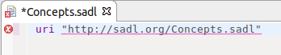
- Ask for content assistance again. Note that if the previous assist
did not add a space after the insertion, add a space before requesting
content assist. This time there is more than one choice so a
pop-up menu appears. Select the "alias" option with a double click or a
single click and the Enter key.
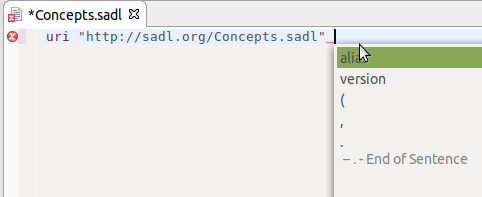
- Again asking for content assist will automatically fill in the alias,
the short equivalent of the URI that can be used in qualified names
(qnames). You may edit the alias but it must remain a single word.
- At this point you can end the statement with a period or you may again
request assistance (adding a space if necessary), in which case your
choices will be to add an End of Sentence (period) or to add a version.
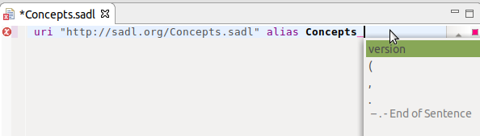
For now, let's end this sentence with a period.
- Press the Enter key to go to the next line; maybe twice to separate
the model name from the rest of the model.
Defining Classes, Properties, and Instances
A class is a concept that identifies a set of things of a particular
type. A property is a concept that identifies a type of characteristic or
relationship. An instance is an identifiable unique member of a class.
- Let's begin by declaring the Person class.
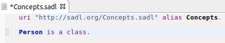
- Think about the attributes and relationships that might be important
for the Person class. We will call properties that take data
values (e.g., numbers, strings, dates, etc.) attributes or data
properties. We will call properties that relate one instance to another
instance relationships or object properties. A Person can have
a birthdate, and usually only one, so we will create a
single-valued attribute. The resulting class declaration looks like
this:
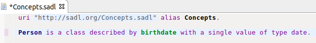
Note that we could also have added a separate statement to define birthdate.
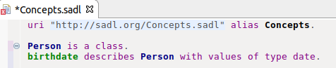
- Let's add two new subclasses of Person. A subclass is like a
subset. Every member of a subclass is, by definition, a member of its
super class.
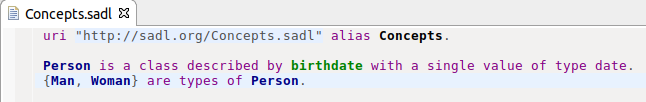
- Now let's go back and add some more properties to the Person
class. Place the cursor after "date" and before the period and add the mother
property., then the father property We'll take a biological
view in the tutorial and make each a single-valued relationship. The
range of mother will be Woman and the range of father
will be Man. Although not required, we'll also insert a comma,
a new-line, and a tab before each of the added clauses to make the model
more readable and to avoid very long lines.
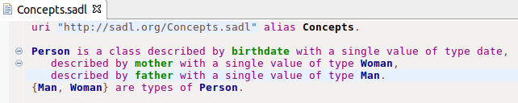
Note that you may click on the "-" icon in front of Person to hide the
detail and make more of the model visible at a larger level of
granularity in a given window. This is called folding. If you do so you
can still see the complete definition of Person by moving the mouse
cursor over the "+" icon in front of Person.

- Finally, let's add some more classes and properties to round out our
basic model. Create a class named Gender. Using the "must be
one of" construct, fill in Male and Female as the
two members of the class. (The "{...}" syntax is used in SADL to
identify a list consisting of the members within the curly brackets.)
The first statement below defines Gender as a class with two
members, Male and Female. This is class definition
by enumeration. The second statement creates the object property gender
with domain Person and range Gender.
Gender is a class , must be one of {Male, Female}.
gender describes Person with a single value of type Gender.
More SADL Constructs for Classes
- Now lets add a restriction that Man and Woman are
disjoint, meaning that an instance of Person cannot be a
member of both classes.
Man and
Woman are disjoint.
- Define Parent, Father, and Mother as
types of Person. Further define a Parent
axiomatically as a Person with at least one child.
Define Father as the intersection of Man and Parent
and Mother as the intersection of Woman and Parent.
(Intersection means that a member of the Father class must
belong to both the Man and Parent classes.) Note
that in the "must be one of" example above, curly brackets were used to
delineate a list of the members of the class and the list
elements were separated by a comma. In the case below, the class Parent
is defined as the intersection of the classes Man and Parent.
Curly brackets are used to delineate such a class.
{Parent, Father, Mother} are types of Person.
A Person is
a
Parent
only if child has at least
1 value.
Father is
the
same as {Man and Parent}.
Mother is
the
same as {Woman and Parent}.
- Define Child and Adult as types of Person.
Now you can further define Child as anyone who is not an Adult.
{Child, Adult} are types of Person.
Child is
the
same as not Adult.
More SADL Constructs for Properties
- Let's define a new relationship called spouse with domain
and range Person.
spouse
describes
Person with values
of
type Person.
We might like to say that a Person can only have one spouse.
Let's explore and contrast two ways of doing so. The first is by
changing the wording from "with values of type" to "with a single value
of type".
spouse describes Person with a single value of type Person.
This construct puts a
maximum cardinality restriction on the Person class for the
spouse property. However, one could also make the spouse
property functional, meaning that for any given subject, spouse
can only have one value.
spouse describes Person with values of type Person.
spouse has a single value.
Here is another thing we could say about spouse. If "A has
spouse B" then "B has spouse A". We call this type of
property a symmetrical property. By making spouse symmetrical,
we allow an OWL reasoner to conclude, given the relationship in one
direction, the relationship in the other direction.
spouse is symmetrical.
- Another useful relationship type in OWL is the "inverse of"
relationship between two properties. The definitions below allow an OWL
reasoner to conclude that if Adam is the parent of Cain, then
Cain is the child of Adam, and vice versa.
parent describes Person with
values
of type Person.
parent
is
the inverse of child.
- Yet another useful relationship type in OWL is the transitive
property. Consider this addition to our model.
Location is a
class,
described
by latitude
with a single value of type
double,
described
by
longitude
with a single value of type
double,
described
by
description
with
values of type string.
locatedIn describes Location with
values
of type Location.
locatedIn is
transitive.
By making locatedIn a transitive property, we allow an
OWL reasoner to conclude that if Atlanta is locatedIn
Georgia, and Georgia is locatedIn the USA,
then Atlanta is locatedIn the USA.
More SADL Constructs for Instances
- In the Gender example above, we saw one way to create
instances, but only for enumerated classes. The most common way of
creating an instance is with a statement like this.
George is a Man with birthdate "1732-02-22".
- In OWL, instances (and classes for that matter) do not have to be
given a name. To better illustrate this point, we will create a subtype
of Event called Birth which will hold additional
information. Here's the Event and Birth definitions:
Event is a class, described by
location
with
a single value of type Location,
described
by
when
with a single value of type date.
Birth
is a type of Event described by
birthMother with a
single
value of type Woman,
described
by baby
with values of type Person.
Note that since Birth is a type of Event, Birth is also described by
"location" and "when" properties. Note that baby is not
restricted to a single value--a Birth can have multiple
babies.
- Now we are ready to illustrate unnamed instances. Many (most) of the
instances of things in the real world are not given unique names. We
identify these instances by their relationship to something else:
"Mary's car", "John's party", "my address". Even when something has a
name, we may wish to identify it in the context of something else. Your
car may have a VIN identifier, which is unique. Chances are you don't
use in in normal conversation. Consider this instance declaration.
A Birth with birthMother (a Woman Martha),
with baby George,
with location (a Location with latitude 38.186111,
with longitude -76.930556,
with description "Pope's
Creek Estate"),
with when "1732-02-22".
Note that we have not had to give a name to the Birth--it's
identified by its relationship to George or by its
relationship to Martha and the date. Note also that we have
not had to give a name to the Location, although it has a
human-readable description which is not a valid URI name. Finally note
that Martha is defined as a Woman in-line rather
than somewhere else in the model. (We don't need to define George
because he is already declared elsewhere so we can just reference him.
- SADL allows instance data statements to be in different formats. For
example, the following are all equivalent statements:
George spouse Martha.
George has
spouse
Martha.
George with spouse Martha.
Which to use depends on which sounds more natural for the given
statement.
- OWL assumes an Open World, meaning that just because something isn't
known to be true doesn't mean that one can conclude that it is false. In
other words, one can't assume that everything there is to know is known.
Therefore we may sometimes wish to express explicitly that we know that
two instances are not the same instance. For example,
George is not the
same
as Martha.
- Similarly, we might wish to state that two instances are, in fact, the
same instance, meaning that the instance has two different names. This
is particularly useful if we are using two ontologies that have
different names for the identical instance. For example,
GeorgeWashington is the same
as
George.
Note that we can also say a similar thing about two classes or
two properties. In SADL "is the same as" is used for instances, classes,
and properties although the translation may be to different OWL
constructs.
Modularity
For any real knowledge base one would not want to have everything in a
single SADL file (which is translated to a single OWL file or named
graph). There are multiple reasons for modularizing a knowledge base
including maintainability and reusability. In this section we will
refactor our model (not an uncommon practice in the early stages of a
modeling project) to place the domain concept definitions (the meta-data)
and the instance or scenario data in separate models. It wouldn't make
much sense to define the general concepts of a genealogy model and put
some very specific instance data in the same model. Rather the separated
meta-model can be used by many different scenarios.
- Create a new model to populate with instance data relating to a
particular group of people, e.g., George.sadl.
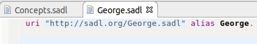
- Now with the cursor at the beginning of a new line, ask for content
assist.
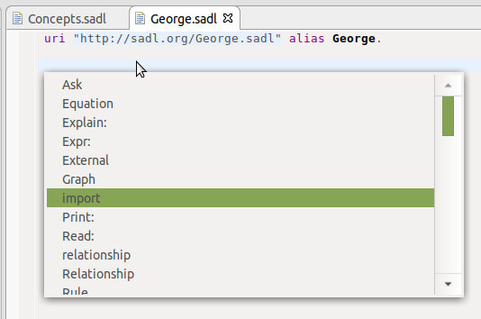
This displays a popup menu with a long list of possible first words for
a new statement. Select "import" and ask for content assist again to add
the name (URI) of the meta-model previously created.
uri "http://sadl.org/George.sadl" alias George.
import "http://sadl.org/Concepts.sadl".
This will enable us to
use the classes and properties we've already defined to create this
instance data model.
- Copy the instance data that we previously added (George and
the unnamed instance of Birth) from the concepts model to the
new instance data model. Then remove them from the concepts model.
George is a Man with birthdate "1732-02-22".
A Birth with birthMother (a Woman Martha),
with baby George,
with location (a Location with latitude 38.186111,
with longitude -76.930556,
with description "Pope's
Creek Estate"),
with when "1732-02-22".
Inference and Rules
SADL uses pluggable reasoners to do two kinds of reasoning: inference of
OWL entailments and inference from rules in the knowledge base. These two
kinds of inference must be integrated by the selected reasoner. The target
reasoner and its associated translator are set in the project properties.
We will show how to use and results from the default Apache Jena-based
reasoner.
- The first kind of reasoning is OWL entailments. This includes
inferences drawn from symmetrical, transitive, or inverse properties,
for example. It also includes transitive closure over class
hierarchies.To illustrate this type of reasoning, let's add a SPARQL
query to our model. Note that a SPARQL query is an opaque string passed
to the target reasoner to process.
Ask:
"select
?x
where {<George> <rdf:type> ?x}".
This query asks for all of the classes to which George
belongs.
- Using the default Jena-based reasoner (which is really an RDF rule
engine reasoner that uses rules to do various kinds of OWL entailments
based on the reasoner settings), we need to tell the reasoner that we
wish to do at least transitive closure over class hierarchies, meaning
infer all of the classes to which an instance belongs. To configure the
reasoner, right-click on the project name in the Project Explorer and
select Properties or click on the Project pulldown menu and select
Properties. Expand "SADL" and click on "Reasoner Preferences". Then
click on "Jena". (Don't click on the check mark to deselect it but on
the name itself to select the reasoner and activate the "Edit" button.)
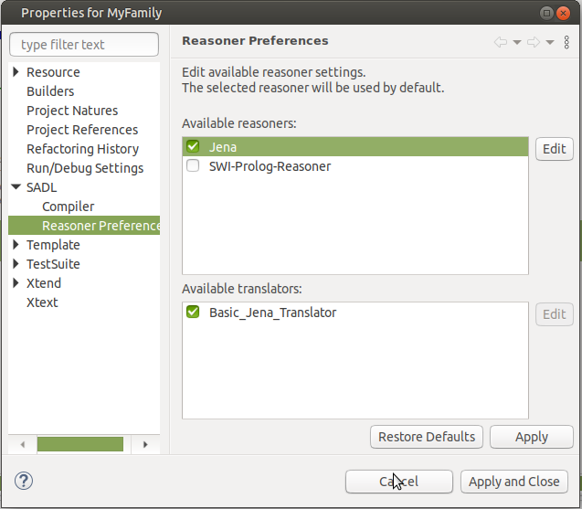
- Click on the "Edit" button to bring up the reasoner configuration
settings and set the "Jena ontology model specification" to
"OWL_MEM_RDFS". The default, "OWL_MEM", does not do any
inferencing beyond the rules explicitly provided in the knowledge base.
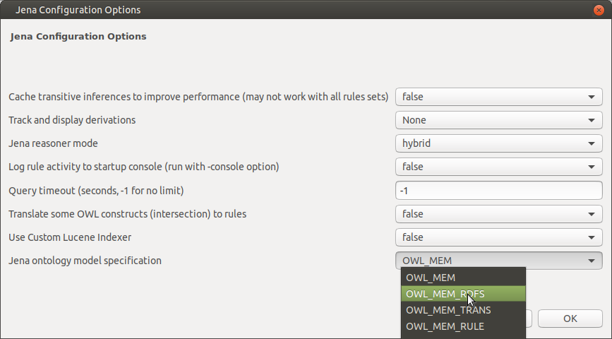
Click on "OK", then on "Apply and Close" to complete setting the
reasoner configuration.
- Now we are ready to run our query against our very small instance data
set. Click in the editor window to make it the active window. If you
have made the SADL Perspective the current Eclipse perspective you can
click on the "SADL" pulldown menu. Otherwise click on the SADL icon .
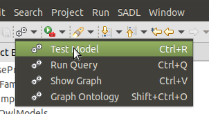
In either case, click on "Test model" to run inference and execute the
query. The results will be shown in the console window. Note that
whether or not the full URI's of concepts or just their local names are
shown in the results can be set in SADL preferences.
Inference of '/home/.../MyFamily/George.sadl' requested.
Query: select ?x where {<George> <rdf:type> ?x}
"x"
"Man"
"Person"
"276d26bd-e169-49bb-ae6b-90628cdfd7e2(blank node)"
"cb018445-a906-45d8-a43d-de85c842be83(blank node)"
"51b5704b-7383-42dc-a05a-9f0a675c7eb3(blank node)"
"03c4fe8e-8112-4f14-881e-911c0828fad4(blank node)"
"Resource"
The first row in the results is self-explanatory--we declared George
to be an instance of the Man class. The second row is
illustrative of an OWL entailment--since Man is a subclass of
Person, every instance of Man is an instance of Person.
The last row is present for a similar reason--because every instance is
an instance of rdf:Resource. The other four rows reflect the
cardinality constraints placed on various properties on the class Person.
For example, our model includes an axiom that members of the Person
class can at most have 1 mother. Since George is an
instance of Person, George is an instance of this
unnamed class of all of the things that are an instance of Person and
have at most 1 mother. Likewise for father, birthdate,
and gender.
- To illustrate the second kind of inference we will construct a rule
that uses information in a Birth instance to infer properties
of an instance of Person. This rule should be part of the
meta-model, Concepts.sadl, since it should apply to any data.
Rule BirthToPerson:
if b is a Birth and b has baby p and
b has birthMother m and
b has when bd
then p has mother m and
p has birthdate bd.
Note that the names in
bold pink are unbound variables that tie the triple patterns of the
conditions and conclusions together.
- To test our rule, add this query, shown in SADL syntax, to your
instance data model.
Ask: select prsn, m, bd where prsn is a Person and
prsn has mother m and
prsn has birthdate bd.
Note that in rules and
queries, triple patterns expressed in SADL can take several forms. For
example, "prsn has mother m" could be expressed in any of these ways.
prsn has mother m
prsn with mother m
prsn mother m
m is mother of prsn
mother of prsn is m
- Clear the console window
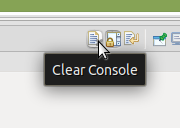
and run "Test model" again. Compare your results to those below.
Query: select ?prsn ?m ?bd where {?prsn
<http://www.w3.org/1999/02/22-rdf-syntax-ns#type>
<http://sadl.org/Concepts.sadl#Person> .?prsn
<http://sadl.org/Concepts.sadl#mother> ?m .?prsn
<http://sadl.org/Concepts.sadl#birthdate> ?bd}
"prsn","m","bd"
"George","Martha","Fri Feb 22 00:00:00 EST 1732"
- In this simple example it is clear how the results shown were inferred
by the rule above. However, when there are many rules and lots of data,
available tools can be useful in helping to understand inference
results. First, suppose that we didn't understand the source of the
triple George has mother Martha. We might
add the following statement to the end of our instance data model.
Explain: George mother Martha.
Note that the "Explain:" statement may also be followed by "Rule
<RuleName>", where <RuleName> is replaced with the name of a
specific rule that is of interest. Running "Test model" would result in
this output to the console window.
Explanation of
'rdf(George:George, Concepts:mother, George:Martha)':
Derivation of
rdf(George:George, Concepts:mother, George:Martha):
was concluded by: Rule
BirthToPerson
based on matching conditions:
e3a1b498-4d6b-47df-bb8d-2baf68223876 type Birth
e3a1b498-4d6b-47df-bb8d-2baf68223876 baby George
e3a1b498-4d6b-47df-bb8d-2baf68223876 birthMother Martha
e3a1b498-4d6b-47df-bb8d-2baf68223876 when 1732-02-22
- Another way to see how things are being inferred is to turn on
derivations. To do so, go to Project -> Properties -> SADL ->
Reasoner Preferences -> Jena -> Edit and set "Track and
display derivations" to "Deep".
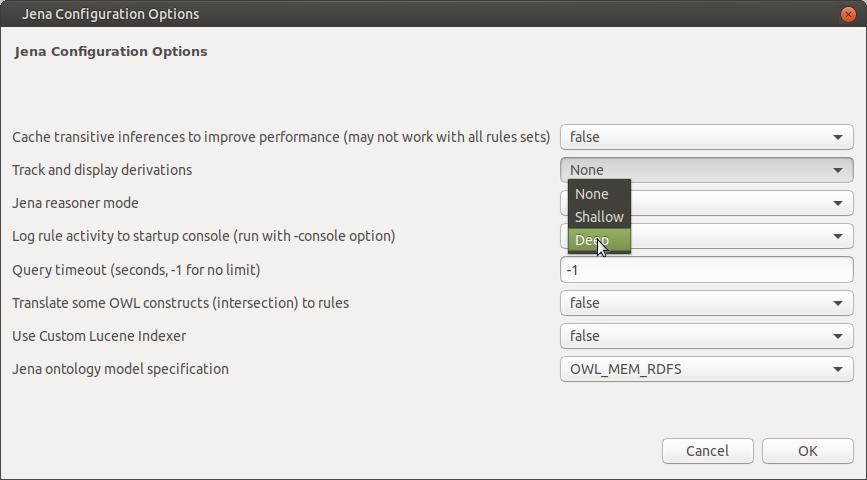
Now running "Test model" will result in the following output to the
console window.
Derivations written to
'/home/camfe/andy/ws/sadl/runtime-EclipseApplication/MyFamily/Temp/George.Derivations.log'
The derivation file, written to the "Temp" folder of the project, can be
opened from the Project Explorer in a text editor. In our simple case,
the contents of the file will be the same as those displayed to the
console window by the "Explain:" statement above. However, if there are
multiple rules and a larger data set, the derivation log will contain
more derivations--the derivations of all inferences drawn by knowledge
base rules.
Summary and Conclusion
This version of the SADL V3 Quick Start Tutorial does not cover all of
SADL functionality. Rather, it is meant to illustrate key capabilities of
SADL in an introductory example. See the SADL
Topical Index.